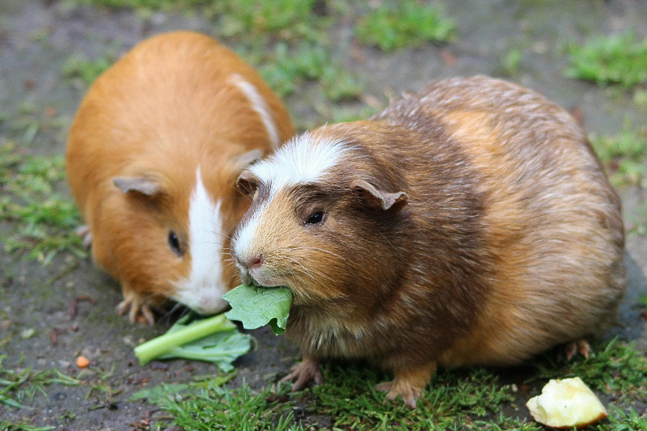
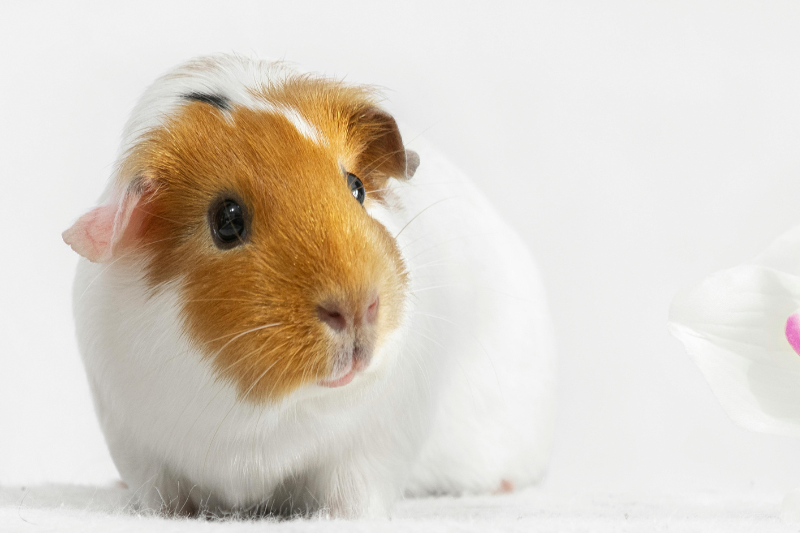

美國短毛天竺鼠是市面上最常見的天竺鼠，全身有短順毛，摸起來柔順光滑。 短毛天竺鼠的每根毛髮約有 3-4 公分長，也會換毛掉毛，仍需注意清潔、但相對來說較好照顧及打理。 市面上也有許多短毛毛色組合，每種花色都十分有特色及人氣。
短毛天竺鼠個性因鼠而異，有些可愛、沉穩又隨和、有些外向、活潑、精力充沛。 以家中飼養的 ＂選布＂ 道奇短毛天竺鼠來說，個性十分樂天、隨和、好奇心重，很愛吃又很常＂雞腿睡＂，真的超療育 ! 常常被萌到~
儘管短毛天竺鼠是最新手友善的品種，仍需注意一些天竺鼠基本照顧事項，例如定期陪伴以及補充維他命 C。 另外還需注意定期指甲修剪，體重控制，才能養出健康又快樂的天竺鼠喔！
作者的話： 短毛天竺鼠符合一般大眾對天竺鼠的印象，因此接受度和人氣均很高，也是待領養天竺鼠中最多的品種，快上愛鼠協會官網挑選一隻屬於自己的短毛天竺鼠吧！


© 本網站為緯育TibaMe【第94期】前端工程師專業技術養成班學員作品,僅供學習、展示之用途。